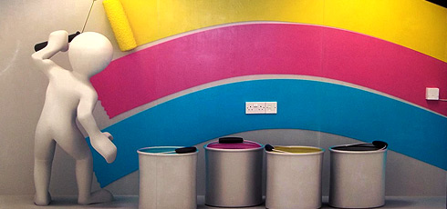
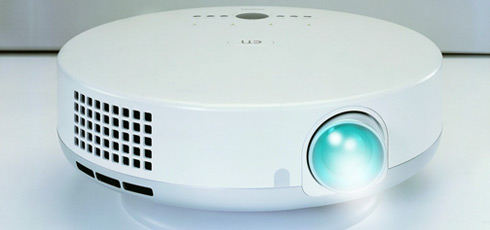

Inline with ever changing legislation from the Government, exposure to ICT in schools for both staff and pupils is seen as a priority. No longer is ICT dubbed as a subject, but as a tool for Teaching and Learning across the curriculum. Our ever expanding Technical Support Team offer the best in ICT support solutions in the education sector. We are able to offer scheduled or bespoke solutions to ensure your school network is not only sustaining, but is also planning ahead for the future in technological advances. All this is nothing without honest pricing and transparent advice, encouraging the school to aim for best value practises regardless of the supplier.
Our Technical Support contracts offer:
- Regular visit patterns with a designated technician to support all ICT hardware and software within the school
- Three year development plan at the beginning of the contract to ensure stability, growth and development inline with the schools individual ICT budget
- Advice and monitoring of network and internet security in support of government legislation
- Unlimited prioritised emergency callout
- Project management of all ICT developments
We all know that when technology works... it's great! But when it goes wrong, the school is left at the mercy of external agents and contractors. Having a company you can trust is imperative.
In 2010 PC Edutech expanded by popular demand to include technical support and installations, Matt Burke has been appointed as Technical Director and has over 13 years experience in IT Support. The previous 10 years have been dedicated to educational support in both High Schools and Primary Schools. His experience will enable PC Edutech to offer a first class service with practical advice and assistance with budgeting and planning to move your ICT provision forward in the best most efficient way.
These days support contracts are typically over 3 years, but as a goodwill gesture our 3 year contracts have a first year exit option without redemption. We know you will be satisfied!
Cabling and whiteboard installations
We are offer a full project management
We can offer a full project management of any ICT work to be carried out by contractors, from Planning to implementation and completion. Our trusted contractors each have well over 10 years experience in their respective fields. Examples of work are as follows:
- Promethean Whiteboard Installations
- Smartboard Installations
- Projector Installations
- Small and Large Network Cabling
- Sound Systems
- Info screens
Examples of work
Printers and Copiers
What were your printing costs for the whole school last year????
PC EduTech can undertake a print/copier auditing and monitoring process throughout your school. After a month this information will be collated and a report produced detailing the current costs being incurred. From this a recommendation can be made and a cost comparison to show the savings possible using alternative contract printers.
On top of saving literally thousands of pounds a year in printing and copying there are benefits to your staff in terms of printing/copying availability and reliability.
Print management is also available to monitor and limit user printing or copying in your school.

Projector Cleansing
The best service for projectors cleaning
Over the last six years the government has invested millions of pounds in Interactive Whiteboard Technology and almost every class in every school in the UK now has an Interactive Whiteboard and a Projector.
All this hardware has a life span, and the result of this initial investment is that the schools budget now has to maintain and replace this hardware when it fails. There are a number of things that can be done to prolong the life of the projectors, one of which involves cleaning the external dust filters but this hardly ever done in schools or seen as a priority. (All our Technical Support contracted school receive this as part of the agreement and in addition to their scheduled visits free of charge).
Dust that gets into the projector can burn against all of the 15 lenses that are tucked away inside the projector and cause what is usually deemed as “permanent” damage, causing the image to be distorted or very dull, replacing the bulb has no effect in this instance!
This service is available to:
- Provide deep cleansing of standard projectors in school with excellent results.
- No down time – We remove the projector from site at the end of the school day, deep clean them overnight, and reinstate them to site the next day before school has even started.
- We provide a quality control report detailing the work carried out and any other issues which may cause problems in the future.
- Capped price of £85 per unit with no additional fees. Price reduced on multiple items.

Replacement projectors and associated items can cost up to £500... having them deep cleaned just once will drastically improve the picture quality, a maintenance program would severely extend the life of the product. Prevention is cheaper than cure!